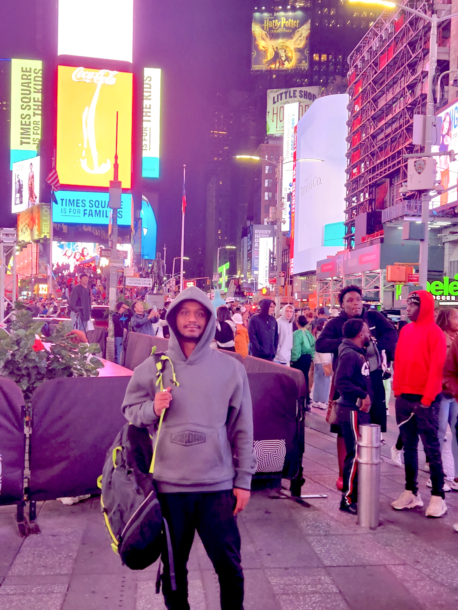

Namaskar /ˌnʌmʌsˈkɑː/ noun. a traditional Indian greeting or gesture of respect

Hello there! . My name is Hrishitva Patel and I am a dedicated individual with a passion for technology, data analytics, and the beautiful world of art.
My journey has been a diverse one, filled with academic accomplishments and personal growth. I am thrilled to share my story, from my educational background to my professional pursuits and creative interests.
My academic journey began at SRM University Kattankulathur (KTR), where I completed my B.Tech, gaining a solid foundation in engineering. Building upon that knowledge, I pursued my Master's in Computer Science from the prestigious SUNY Binghamton, where I delved into the world of cutting-edge technologies and data-driven insights.
Currently, I am actively engaged in the realm of data analytics and machine learning. My passion for technology and data has led me to contribute to the ever-evolving field of data analytics, where I apply my expertise to unravel meaningful patterns and extract valuable insights from vast and complex datasets. I find great joy in using technology to solve real-world problems and drive data-informed decision-making.
Seeking continuous growth and an expanded understanding of information systems, I completed pursuing an MBA at Western Governor's University. This endeavor allowed me to develop my leadership skills and gain a comprehensive understanding of the business side of technology. Furthermore, I am delighted to have been admitted to pursue a Ph.D. in Information Systems at the University of Texas at San Antonio (UTSA).
This forthcoming experience promises to be an enriching journey as I explore the frontiers of knowledge in my chosen field.
Amidst my academic and professional endeavors, I have always cherished the creative outlet that art provides. Painting, in particular, has become my favorite pastime passion. It offers me a means to express myself, unwind, and explore my imagination. The colorful strokes on the canvas allow me to tap into a different realm of creativity, offering a perfect balance to my tech-oriented pursuits.
In summary, I consider myself a learner. An individual who thrives on the synergy of data analytics, technology, and artistic expression. This amalgamation of interests defines who I am, and I eagerly anticipate the next chapters in my ever-evolving story.